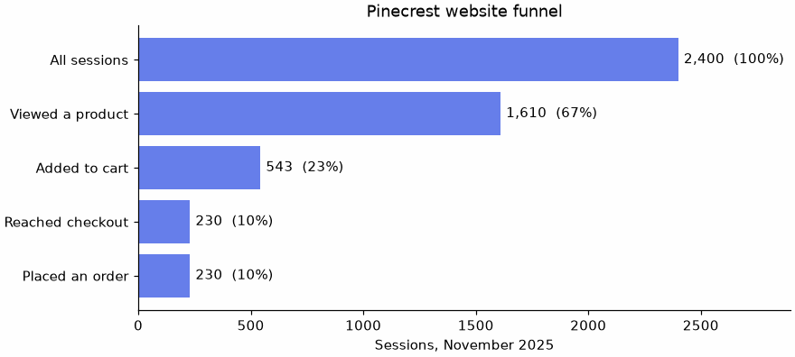

🍃 Lesson 5.5: NoSQL with MongoDB
Not all data is rows and columns. Meet the document database, where a record can hold lists and nested objects, and learn to query it and bring the answers back into pandas.
🎯 Learning Objectives
By the end of this lesson, you will be able to:
- Explain how a document differs from a row, and judge when a document store fits a dataset better than relational tables
- Insert, find, update and delete documents with
pymongo - Write queries with operators, dot notation and array conditions, and choose the fields returned with a projection
- Build an aggregation pipeline with
$match,$group,$sort,$unwindand$addFields, and relate each stage to SQL and pandas - Create indexes on a collection and flatten nested results into a tidy DataFrame
In This Lesson
📄 Documents vs Rows
Pinecrest's website records every visit as a session. Look at one, straight from data/web_sessions.json.
import json
from pprint import pprint
with open("data/web_sessions.json", encoding="utf-8") as f:
data = json.load(f)
sessions = data["sessions"]
print(len(sessions), "sessions,", data["period"]["start"], "to", data["period"]["end"])
pprint(sessions[1], sort_dicts=False, width=100)Output
2400 sessions, 2025-11-01 to 2025-11-30
{'session_id': 'S00002',
'customer_id': None,
'started_at': '2025-11-01T06:48:03',
'device': {'type': 'desktop', 'os': 'macOS', 'browser': 'Safari'},
'utm': {'source': 'newsletter', 'medium': 'email', 'campaign': 'november_trail_notes'},
'pages': [{'path': '/', 'seconds': 18, 'at': '2025-11-01T06:48:03'},
{'path': '/product/TNT-1003', 'seconds': 38, 'at': '2025-11-01T06:48:21'},
{'path': '/category/camp-kitchen', 'seconds': 41, 'at': '2025-11-01T06:48:59'},
{'path': '/product/ACC-1004', 'seconds': 84, 'at': '2025-11-01T06:49:40'},
{'path': '/category/climbing', 'seconds': 44, 'at': '2025-11-01T06:51:04'},
{'path': '/cart', 'seconds': 94, 'at': '2025-11-01T06:51:48'}],
'cart': {'items': [{'sku': 'TNT-1003', 'qty': 2, 'unit_price': 459.95},
{'sku': 'ACC-1004', 'qty': 1, 'unit_price': 85.95}],
'value': 1005.85},
'converted': False,
'order_id': None}This one record contains a nested device object, a utm object describing where the visitor came from, a list of pages viewed, and a cart holding another list of items. It is not a row. To store it in the relational style of the last four lessons you would split it across at least three tables (sessions, page views, cart items), linked by session_id, and reassemble it with joins whenever you wanted the whole visit back.
💡 Mental Model: The Ledger and the Folder
A relational database is a set of ledgers. Each ledger has fixed columns, every entry fills the same columns, and facts about one visit are spread over several ledgers that reference each other by number. That is wonderful for consistency and for questions that cut across everything.
A document database is a filing cabinet of folders. Each folder holds everything about one thing, in whatever shape that thing has: one visit's pages, cart and all. Pull one folder and you have the complete story, with no assembly. Two folders need not contain the same sheets.
That last point shows in the data. Compare the keys of the first two sessions:
print(list(sessions[0].keys()))
print(list(sessions[1].keys()))Output
['session_id', 'customer_id', 'started_at', 'device', 'pages', 'cart', 'converted', 'order_id']
['session_id', 'customer_id', 'started_at', 'device', 'utm', 'pages', 'cart', 'converted', 'order_id']The first session has no utm key at all: the visitor typed the address directly. In a table, that would be three columns filled with NULL. In a document it is simply absent. This flexibility is called a flexible schema, and it is both the main attraction of document databases and the main thing to be careful about.
| Relational (SQL) | MongoDB |
|---|---|
| Database | Database |
| Table | Collection |
| Row | Document (like a Python dictionary) |
| Column | Field |
| Primary key | The _id field, created automatically if you do not supply one |
| Join to a child table | Often an embedded list or object inside the document |
Schema fixed by CREATE TABLE | Each document carries its own structure |
"NoSQL" is an umbrella term for databases that are not relational: document stores, key-value stores, graph databases and others. MongoDB is the most widely used document store, and it is the one this lesson teaches.
⚖️ When a Document Store Fits
Neither model is better. They are good at different things, and plenty of organizations run both: orders in PostgreSQL, clickstream in MongoDB.
| A document store fits when... | A relational database fits when... |
|---|---|
| Each record is naturally nested, and you usually read or write it whole (a session, a product page, a support ticket with its messages) | The data is naturally tabular and the same facts are shared by many records (customers, orders, products) |
| Records vary in shape, or the shape changes often | Every record has the same fields and you want the database to enforce that |
| Most questions are about one kind of record at a time | Questions routinely combine several kinds of record with joins |
| You are ingesting events or API responses that already arrive as JSON | Correctness across records matters most: money, inventory, anything double-entry |
Pinecrest's own data shows the split. Orders, customers and products reference each other constantly, so they live in pinecrest.db. Web sessions are self-contained, nested and irregular, and nobody updates a page view after the fact. They are a natural fit for documents.
⚠️ Flexible Does Not Mean Free
A table rejects a row with a misspelled column. A collection accepts a document with a misspelled field without comment, and your queries then quietly miss it. With a flexible schema, the discipline that CREATE TABLE used to provide becomes your job: check what fields are really there before you trust a count. You will see this in Common Mistakes.
🔌 Connecting with pymongo
MongoDB is a server, like PostgreSQL. Python talks to it through the pymongo library, which you installed in Lesson 0.1. A real connection looks like this:
from pymongo import MongoClient
client = MongoClient("mongodb://localhost:27017") # a MongoDB server on your own computer
# client = MongoClient(os.environ["MONGODB_URI"]) # a hosted cluster: keep the URI, which holds a password, out of your code(os.environ reads an environment variable, as in the PostgreSQL example in Lesson 5.1; Lesson 6.4 covers them properly.)
Installing a database server is more setup than this lesson needs. Instead you will use mongomock, a small library (also installed in Lesson 0.1) that imitates a MongoDB server inside your Python process. Its client has the same methods as pymongo's, so every line you write below is real pymongo code. Only the first line changes when you move to a real server.
import mongomock
import pandas as pd
pd.set_option("display.width", 150)
pd.set_option("display.max_columns", 20)
client = mongomock.MongoClient() # with a real server: MongoClient("mongodb://localhost:27017")
db = client["pinecrest"] # a database
coll = db["sessions"] # a collection in it
print(coll.count_documents({}))Output
0Nothing had to be created first. A database and a collection come into existence the moment you put a document into them. The collection is empty for now.
💡 What Was Verified, and What Was Not
Every code block in this lesson was run with mongomock 4.3 and pymongo 4.18, and the output shown is real. A local or hosted MongoDB server behaves the same for these calls. Three things could not be verified this way and are marked where they appear: the connection to a real server shown above, the explain() method for query plans, and a few pipeline operators mongomock does not implement ($round, $substrCP and $sortByCount are the ones you are likely to meet). mongomock also keeps data in memory only: when your notebook restarts, the collection is gone, so each session starts by loading the JSON file again.
🧱 CRUD: Create, Read, Update, Delete
Create: insert_many and insert_one
A document is a Python dictionary, and a list of dictionaries is exactly what json.load gave you. Loading the file into the collection is one call.
result = coll.insert_many(sessions)
print(len(result.inserted_ids), "documents inserted")
print(coll.count_documents({}))Output
2400 documents inserted
2400No CREATE TABLE, no column types, no splitting into three tables. Every document was also given a unique _id, MongoDB's primary key.
Read: find_one, find and count_documents
A query is itself a dictionary: field: value pairs that a document must match. This is the idea that replaces WHERE. An empty dictionary, {}, matches everything.
doc = coll.find_one({"session_id": "S00002"})
print(type(doc["_id"]).__name__)
print(doc["device"])
print(doc["cart"]["value"], len(doc["pages"]), "pages")Output
ObjectId
{'type': 'desktop', 'os': 'macOS', 'browser': 'Safari'}
1005.85 6 pagesfind_one returns one document as a dictionary (or None), nested parts included, with the automatic _id as an ObjectId. find returns a cursor, the same idea as in sqlite3: something you loop over, which fetches documents as you go.
print(coll.count_documents({"converted": True}))
cursor = coll.find({"converted": True, "device": {"type": "tablet", "os": "Android", "browser": "Chrome"}})
for doc in cursor:
print(doc["session_id"], doc["started_at"], doc["cart"]["value"])Output
230
S00274 2025-11-04T15:46:39 85.95Several conditions in one dictionary are combined with "and". The second condition compared the whole device object at once, which works but is fragile (the keys must match exactly and in order). The next section shows the usual way to reach inside a nested object.
Update: update_one and update_many
An update takes two dictionaries: a query that says which documents, and a change that says what to do, written with an update operator such as $set (set a field), $inc (add to a number) or $push (append to a list).
r = coll.update_one({"session_id": "S00002"}, {"$set": {"reviewed": True}, "$push": {"tags": "big-cart"}})
print(r.matched_count, r.modified_count)
r = coll.update_many({"customer_id": None}, {"$set": {"visitor_type": "anonymous"}})
print(r.matched_count, r.modified_count)
print(coll.find_one({"session_id": "S00002"}, {"_id": 0, "reviewed": 1, "tags": 1, "visitor_type": 1}))Output
1 1
1547 1547
{'reviewed': True, 'tags': ['big-cart'], 'visitor_type': 'anonymous'}Two new fields and a new list appeared on the documents that were updated, and on no others. No ALTER TABLE was needed. The 1,547 sessions with no customer_id are the anonymous visitors, 64% of the total.
Delete: delete_one and delete_many
coll.insert_one({"session_id": "TEST", "note": "a document with a completely different shape"})
print(coll.count_documents({}))
r = coll.delete_many({"session_id": "TEST"})
print(r.deleted_count, coll.count_documents({}))
# put the collection back as it was, so the rest of the lesson matches the file
coll.update_many({}, {"$unset": {"reviewed": "", "tags": "", "visitor_type": ""}})
print(coll.count_documents({"visitor_type": {"$exists": True}}))Output
2401
1 2400
0🛑 delete_many({}) Deletes Everything
An empty query matches every document, so delete_many({}) empties the collection, and there is no undo. Before any delete or update, run count_documents with the same query and check the number is what you expect. It is the same habit as running the SELECT before the DELETE in SQL.
🔎 Query Operators
Exact matches only go so far. For everything else, the value in a query becomes a small dictionary whose key is an operator beginning with $.
| MongoDB query | SQL equivalent |
|---|---|
{"converted": True} | WHERE converted = 1 |
{"cart.value": {"$gt": 300}} | WHERE cart_value > 300 (also $gte, $lt, $lte, $ne) |
{"utm.medium": {"$in": ["email", "social"]}} | WHERE medium IN ('email', 'social') |
{"a": 1, "b": 2} | WHERE a = 1 AND b = 2 |
{"$or": [{"a": 1}, {"b": 2}]} | WHERE a = 1 OR b = 2 |
{"utm": {"$exists": False}} | No direct equivalent: the field itself is absent |
{"pages.path": {"$regex": "^/product/"}} | LIKE '/product/%', on a child table |
Dot Notation: Reaching Inside
To query a field of a nested object, join the names with a dot, in quotes.
print(coll.count_documents({"device.type": "mobile"}))
print(coll.count_documents({"device.type": "mobile", "cart.value": {"$gt": 300}}))
print(coll.count_documents({"utm.medium": {"$in": ["email", "social"]}}))
print(coll.count_documents({"$or": [{"device.os": "iOS"}, {"device.os": "iPadOS"}]}))
print(sorted(coll.distinct("utm.medium")))Output
1326
93
433
876
['cpc', 'email', 'organic', 'referral', 'social']Missing Is Not the Same as Null
In a document, a field can hold null (Python None) or it can be absent altogether. customer_id is always present and is null for anonymous visitors. utm is absent for direct visits.
print("customer_id is null :", coll.count_documents({"customer_id": None}))
print("customer_id is missing:", coll.count_documents({"customer_id": {"$exists": False}}))
print("utm is missing :", coll.count_documents({"utm": {"$exists": False}}))
print("utm equals None :", coll.count_documents({"utm": None}))
print("no utm.campaign :", coll.count_documents({"utm.campaign": {"$exists": False}}))Output
customer_id is null : 1547
customer_id is missing: 0
utm is missing : 916
utm equals None : 916
no utm.campaign : 1653Read the fourth line carefully: {"utm": None} matched the 916 sessions that have no utm field. In a query, None matches both "the field is null" and "the field is not there". When the difference matters, $exists is the precise tool. The last line counts 1,653 sessions without a campaign: the 916 with no utm at all, plus 737 that have a utm object but no campaign in it.
Querying Inside Lists
pages is a list of objects. Dot notation works through a list: "pages.path" means "the path of any element of pages".
print("visited /checkout :", coll.count_documents({"pages.path": "/checkout"}))
print("viewed a product page :", coll.count_documents({"pages.path": {"$regex": "^/product/"}}))
print("exactly one page (bounce):", coll.count_documents({"pages": {"$size": 1}}))
print("footwear in the cart :", coll.count_documents({"cart.items.sku": {"$regex": "^FTW"}}))Output
visited /checkout : 230
viewed a product page : 1610
exactly one page (bounce): 200
footwear in the cart : 79Each of those would be a join to a child table in SQL. Here the list is inside the document, so the question is a single condition. When you need two conditions to hold for the same element of a list, use $elemMatch:
same_element = {"pages": {"$elemMatch": {"path": "/checkout", "seconds": {"$gte": 120}}}}
any_elements = {"pages.path": "/checkout", "pages.seconds": {"$gte": 120}}
print("two minutes or more ON the checkout page:", coll.count_documents(same_element))
print("visited checkout, and some page took two minutes:", coll.count_documents(any_elements))Output
two minutes or more ON the checkout page: 25
visited checkout, and some page took two minutes: 77Without $elemMatch, each condition may be satisfied by a different page: the session visited checkout, and some page (perhaps a product page) held the visitor for two minutes. The two questions sound alike and differ by a factor of three.
✂️ Projections, Sorting and Limits
A session document is large. The second argument of find is a projection: a dictionary saying which fields to return, with 1 to include. It is the SELECT a, b to find's WHERE. _id comes along unless you exclude it with "_id": 0. As in Lesson 5.4, fetch only what you need.
cursor = (coll.find({"converted": True},
{"_id": 0, "session_id": 1, "device.type": 1, "cart.value": 1})
.sort("cart.value", -1)
.limit(3))
for doc in cursor:
print(doc)Output
{'session_id': 'S02262', 'device': {'type': 'mobile'}, 'cart': {'value': 1590.85}}
{'session_id': 'S00257', 'device': {'type': 'mobile'}, 'cart': {'value': 1579.8}}
{'session_id': 'S00039', 'device': {'type': 'desktop'}, 'cart': {'value': 1265.85}}.sort(field, direction) takes 1 for ascending and -1 for descending, and .limit(n) stops after n documents: the largest three converted carts, exactly like ORDER BY cart_value DESC LIMIT 3. Notice that the projection kept the nesting: device is still an object, now with only its type.
A projection can also exclude: {"pages": 0} returns everything except the bulky list. You cannot mix including and excluding in one projection, apart from _id.
doc = coll.find_one({"session_id": "S00002"}, {"_id": 0, "pages": 0})
pprint(doc, sort_dicts=False, width=110)Output
{'session_id': 'S00002',
'customer_id': None,
'started_at': '2025-11-01T06:48:03',
'device': {'type': 'desktop', 'os': 'macOS', 'browser': 'Safari'},
'utm': {'source': 'newsletter', 'medium': 'email', 'campaign': 'november_trail_notes'},
'cart': {'items': [{'sku': 'TNT-1003', 'qty': 2, 'unit_price': 459.95},
{'sku': 'ACC-1004', 'qty': 1, 'unit_price': 85.95}],
'value': 1005.85},
'converted': False,
'order_id': None}🏭 The Aggregation Pipeline
find filters and returns documents. To group, count, sum and reshape, MongoDB uses the aggregation pipeline: a list of stages, where each stage takes the documents coming out of the one before, transforms them, and passes them on. If you have chained pandas methods, or stacked CTEs in Lesson 5.2, you already think this way.
| Stage | What it does | SQL | pandas |
|---|---|---|---|
$match | Keep matching documents (same syntax as find) | WHERE (or HAVING, after a $group) | Boolean mask |
$group | One output document per _id value, with accumulators such as $sum, $avg, $max | GROUP BY | groupby().agg() |
$sort, $limit | Order and cut off | ORDER BY, LIMIT | sort_values, head |
$project | Choose or compute the fields to keep | The SELECT list | Column selection |
$addFields | Add computed fields, keep the rest | An extra expression in SELECT | assign |
$unwind | Turn each element of a list into its own document | A join to the child table | explode |
$count | Count the documents that reach it | COUNT(*) | len |
Results print more clearly as a table, so here is a small helper that turns a pipeline's output into a DataFrame with _id first.
def run(pipeline, collection=None):
"""Run an aggregation pipeline and return the result as a DataFrame, _id column first."""
docs = list((coll if collection is None else collection).aggregate(pipeline))
df = pd.DataFrame(docs)
return df[["_id"] + [c for c in df.columns if c != "_id"]] if "_id" in df.columns else df
by_device = run([
{"$group": {
"_id": "$device.type",
"sessions": {"$sum": 1},
"avg_cart": {"$avg": "$cart.value"},
"largest_cart": {"$max": "$cart.value"},
}},
{"$sort": {"sessions": -1}},
])
print(by_device.round(2).to_string(index=False))Output
_id sessions avg_cart largest_cart
mobile 1326 57.32 1590.85
desktop 915 52.85 1265.85
tablet 159 70.77 1293.80Read the $group stage piece by piece. _id is the grouping key, and a string that starts with $ means "the value of this field": "$device.type". Each other entry is an output field with an accumulator. {"$sum": 1} adds 1 per document, which is how you count. In SQL: SELECT device_type, COUNT(*), AVG(cart_value), MAX(cart_value) ... GROUP BY device_type ORDER BY 2 DESC.
Conditions Inside a Group, and Missing Fields
$cond is the pipeline's CASE WHEN: {"$cond": [test, value_if_true, value_if_false]}. Summing it counts the documents that pass a test, the conditional aggregation you used in Lesson 5.2. $ifNull supplies a value when a field is null or missing, like COALESCE. Together they give conversions by traffic medium (utm.medium: how the visitor arrived), with direct visits labeled.
by_medium = run([
{"$group": {
"_id": {"$ifNull": ["$utm.medium", "direct"]},
"sessions": {"$sum": 1},
"converted": {"$sum": {"$cond": ["$converted", 1, 0]}},
}},
{"$sort": {"sessions": -1}},
])
by_medium["conversion_pct"] = (100 * by_medium["converted"] / by_medium["sessions"]).round(1)
print(by_medium.to_string(index=False))Output
_id sessions converted conversion_pct
direct 916 90 9.8
organic 601 52 8.7
cpc 314 33 10.5
email 224 16 7.1
social 209 27 12.9
referral 136 12 8.8The percentage was computed in pandas. A real MongoDB server could do it inside the pipeline with $divide, $multiply and $round, but mongomock does not implement $round, and finishing a small result in pandas is a perfectly good division of labor. Before reading much into the differences, look at the counts: 27 conversions out of 209 social sessions is a small sample, and Module 4 taught you what to do about that.
$match First, and $unwind for Lists
Which pages get the most views, and how long do people stay on them? The page views are inside lists, so $unwind first turns every list element into its own document: 2,400 sessions become 9,348 page-view documents, each still carrying its session's other fields.
print(run([{"$unwind": "$pages"}, {"$count": "page_views"}]).to_string(index=False))
top_pages = run([
{"$match": {"device.type": "mobile"}}, # filter early: fewer documents to unwind
{"$unwind": "$pages"},
{"$group": {
"_id": "$pages.path",
"views": {"$sum": 1},
"avg_seconds": {"$avg": "$pages.seconds"},
}},
{"$match": {"views": {"$gte": 150}}}, # after $group this acts like HAVING
{"$sort": {"avg_seconds": -1}},
{"$limit": 5},
])
print(top_pages.round(1).to_string(index=False))Output
page_views
9348
_id views avg_seconds
/cart 309 68.2
/category/apparel 192 47.5
/category/climbing 151 47.2
/category/camp-kitchen 160 46.8
/sale 171 46.2The same stage, $match, appears twice with different jobs. Before $group it filters documents, like WHERE. After $group it filters groups, like HAVING. A stage's meaning comes from where it sits in the pipeline. And, as in Lesson 5.4, filter as early as you can, so that later stages handle fewer documents and an index can be used.
Computed Fields with $addFields
engagement = run([
{"$addFields": {
"n_pages": {"$size": "$pages"},
"total_seconds": {"$sum": "$pages.seconds"},
}},
{"$group": {
"_id": "$converted",
"sessions": {"$sum": 1},
"avg_pages": {"$avg": "$n_pages"},
"avg_minutes": {"$avg": {"$divide": ["$total_seconds", 60]}},
}},
{"$sort": {"_id": 1}},
])
print(engagement.round(2).to_string(index=False))Output
_id sessions avg_pages avg_minutes
False 2170 3.54 2.77
True 230 7.25 6.40$size gives the length of a list and {"$sum": "$pages.seconds"} adds up a field across the list, without unwinding. Sessions that ended in an order looked at about twice as many pages. (Careful with the direction of that: buying requires visiting the cart and checkout pages, so converted sessions are longer partly by construction.)
📇 Indexes
Everything from Lesson 5.4 carries over. Without an index, MongoDB examines every document in the collection to answer a query (a collection scan). An index is a sorted structure on one or more fields that lets it jump to the matches, and it costs storage and write speed. _id is indexed automatically, like a primary key.
coll.create_index("session_id", unique=True)
coll.create_index([("device.type", 1), ("started_at", -1)]) # compound: equality field first
for name, info in coll.index_information().items():
print(f"{name:<30} {info['key']} unique={info.get('unique', False)}")Output
_id_ [('_id', 1)] unique=False
session_id_1 [('session_id', 1)] unique=True
device.type_1_started_at_-1 [('device.type', 1), ('started_at', -1)] unique=FalseYou can index a nested field with dot notation, and even a field inside a list ("pages.path"), which MongoDB calls a multikey index. A compound index follows the same leftmost-prefix rule as a composite index in SQL. A unique index also enforces a rule, one of the few a collection can enforce:
from pymongo.errors import DuplicateKeyError
try:
coll.insert_one({"session_id": "S00002", "note": "a second document with an existing id"})
except DuplicateKeyError:
print("DuplicateKeyError: session_id S00002 already exists")
print(coll.count_documents({"session_id": "S00002"}))Output
DuplicateKeyError: session_id S00002 already exists
1To see whether a query uses an index, a real server offers explain(), the counterpart of EXPLAIN QUERY PLAN. mongomock does not implement it, so this block is shown for reference and was not run. According to MongoDB's documentation, the winning plan names a stage COLLSCAN for a collection scan or IXSCAN for an index scan, and executionStats reports how many documents were examined.
plan = coll.find({"session_id": "S00002"}).explain()
print(plan["queryPlanner"]["winningPlan"])🐼 Flattening into a DataFrame
Statistics and charts want a flat table. Getting from nested documents to a DataFrame is the last step of almost every MongoDB analysis, and there are three routes.
Route 1: Let the Pipeline Produce Flat Documents
The output of $group is already flat, which is why run() could hand it straight to pd.DataFrame. For document-level data, a $project stage can lift nested fields to the top level under new names.
flat = run([
{"$match": {"converted": True}},
{"$project": {
"_id": 0,
"session_id": 1,
"customer_id": 1,
"order_id": 1,
"device": "$device.type",
"medium": {"$ifNull": ["$utm.medium", "direct"]},
"cart_value": "$cart.value",
"n_pages": {"$size": "$pages"},
}},
])
print(flat.shape)
print(flat.head(3).to_string(index=False))
print(flat.dtypes.to_string())Output
(230, 7)
session_id customer_id order_id device medium cart_value n_pages
S00003 11550 118263 desktop direct 122.90 7
S00025 14103 118271 tablet organic 19.50 10
S00039 13309 118272 desktop organic 1265.85 9
session_id str
customer_id int64
order_id int64
device str
medium str
cart_value float64
n_pages int64Every column is a plain type, ready for analysis. customer_id is int64 here because every converted session belongs to a signed-in customer. Include the anonymous sessions and it becomes float64, since an ordinary integer column cannot hold a missing value; astype("Int64"), from Lesson 2.3, gives you the nullable integer type.
Route 2: pd.json_normalize
If you pass raw documents to pd.DataFrame, nested objects stay as dictionaries inside cells. pd.json_normalize, from Lesson 2.2, spreads them into dotted columns instead.
docs = list(coll.find({}, {"_id": 0, "pages": 0, "cart.items": 0}).limit(500))
raw = pd.DataFrame(docs)
print(raw.loc[1, "device"]) # still a dictionary in one cell
wide = pd.json_normalize(docs)
print(wide.shape)
print(list(wide.columns))
print(wide["utm.medium"].isna().sum(), "of 500 have no utm.medium")Output
{'type': 'desktop', 'os': 'macOS', 'browser': 'Safari'}
(500, 12)
['session_id', 'customer_id', 'started_at', 'converted', 'order_id', 'device.type', 'device.os', 'device.browser', 'cart.value', 'utm.source', 'utm.medium', 'utm.campaign']
182 of 500 have no utm.mediumDocuments with no utm get NaN in all three utm. columns. The flexible schema became missing values, which you know how to handle. The projection left out the two lists and the _id, since none of them belongs in a flat table.
Route 3: One Row per List Element
For the lists, ask json_normalize for one row per element with record_path, and carry identifying fields along with meta.
docs = list(coll.find({}, {"_id": 0, "session_id": 1, "device.type": 1, "pages": 1}))
page_views = pd.json_normalize(docs, record_path="pages", meta=["session_id", ["device", "type"]])
page_views["at"] = pd.to_datetime(page_views["at"])
print(page_views.shape)
print(page_views.head(3).to_string(index=False))
print(page_views.groupby("device.type")["seconds"].median().to_string())Output
(9348, 5)
path seconds at session_id device.type
/ 45 2025-11-01 06:31:45 S00001 mobile
/category/sleeping 13 2025-11-01 06:32:30 S00001 mobile
/ 18 2025-11-01 06:48:03 S00002 desktop
device.type
desktop 41.0
mobile 41.0
tablet 40.09,348 rows, the same number $unwind counted. This is the pandas version of unwinding, and from here it is ordinary groupby work. Which route to choose follows the rule from Lesson 5.4: reduce in the database when the collection is large, and flatten in pandas when the data already fits comfortably in memory.
✅ You Have Closed the Loop
CSV, Excel, JSON, SQL and now a document database: five kinds of source, and each one ends in the same place, a DataFrame you know how to clean, summarize, test and plot. The source changes. Your analysis skills do not.
⚠️ Common Mistakes
MongoDB is forgiving, which means several of its mistakes produce no error at all, just a wrong number. Those are worth meeting on purpose.
1. A Misspelled Field Name Matches Nothing, Silently
print(coll.count_documents({"device.typ": "mobile"})) # typo: "typ"
print(coll.count_documents({"device.type": "Mobile"})) # wrong case in the valueOutput (no error, wrong answer)
0
0What happened: SQL would say no such column. A collection has no list of valid fields, so a query on a field nobody has is a legitimate question whose answer is zero. Fix: be suspicious of zero. Look at a real document with find_one() and check values with distinct() before trusting a filter.
2. An Update Without an Operator
coll.update_one({"session_id": "S00002"}, {"reviewed": True})Error
ValueError: update only works with $ operatorsWhat it means: the second argument must say how to change the document. Fix: wrap the change in $set: {"$set": {"reviewed": True}}. The error is a kindness: replacing a whole document by accident is what replace_one is for, and it has a different name so that you have to mean it.
3. A Cursor Can Be Read Only Once
cursor = coll.find({"converted": True}, {"_id": 0, "session_id": 1})
print(len(list(cursor)))
print(len(list(cursor)))Output
230
0What happened: like a sqlite3 cursor, it moves forward only, and the first list() used it up. Fix: store the result, docs = list(coll.find(...)), and reuse docs, or run the query again.
4. Two Array Conditions Without $elemMatch
Shown in Query Operators: {"pages.path": "/checkout", "pages.seconds": {"$gte": 120}} counts 77 sessions where the answer you wanted was 25. Fix: when two conditions describe the same list element, put them inside one $elemMatch.
5. The _id Field Gets in the Way
json.dumps(coll.find_one({"session_id": "S00002"}))Error
TypeError: Object of type ObjectId is not JSON serializableWhat it means: the automatic _id is an ObjectId, a MongoDB type that json does not know (it also turns up as an unwanted column in DataFrames). Fix: exclude it with the projection {"_id": 0} when you do not need it, or convert it with str(doc["_id"]).
6. Forgetting the $ on a Field Reference
wrong = run([{"$group": {"_id": "device.type", "sessions": {"$sum": 1}}}])
print(wrong.to_string(index=False))Output (one group instead of three)
_id sessions
device.type 2400What happened: without the leading $, "device.type" is just a piece of text, the same for every document, so everything landed in one group. Fix: inside a pipeline, a field's value is written "$device.type". Query dictionaries (find, $match) use the plain name as the key. Mixing these up is the most common pipeline slip, and everyone makes it.
🛠️ Project: The Funnel Report
The e-commerce team wants to know where visitors drop out between arriving on the site and placing an order, and whether that differs by device. This is called a funnel. The nested session documents hold everything you need. Work in a new notebook, lesson_5_5_project. Allow about 45 minutes.
🛠️ Step 1: Load the sessions into a fresh collection (5 min)
import json
import mongomock
import pandas as pd
import matplotlib.pyplot as plt
with open("data/web_sessions.json", encoding="utf-8") as f:
raw_sessions = json.load(f)["sessions"]
web = mongomock.MongoClient()["pinecrest_web"]["sessions"] # with a real server: MongoClient(uri)[...][...]
web.insert_many(raw_sessions)
web.create_index("session_id", unique=True)
print(web.count_documents({}))Output
2400🛠️ Step 2: The overall funnel with four queries (10 min)
Define each step as a query and count it. A session "viewed a product" if any page path starts with /product/; it "added to cart" if the first element of cart.items exists.
STEPS = {
"All sessions": {},
"Viewed a product": {"pages.path": {"$regex": "^/product/"}},
"Added to cart": {"cart.items.0": {"$exists": True}},
"Reached checkout": {"pages.path": "/checkout"},
"Placed an order": {"converted": True},
}
funnel = pd.Series({step: web.count_documents(query) for step, query in STEPS.items()}, name="sessions").to_frame()
funnel["pct_of_all"] = (100 * funnel["sessions"] / funnel["sessions"].iloc[0]).round(1)
funnel["pct_of_previous"] = (100 * funnel["sessions"] / funnel["sessions"].shift(1)).round(1)
print(funnel)Output
sessions pct_of_all pct_of_previous
All sessions 2400 100.0 NaN
Viewed a product 1610 67.1 67.1
Added to cart 543 22.6 33.7
Reached checkout 230 9.6 42.4
Placed an order 230 9.6 100.0Two thirds of sessions look at a product, a third of those add something to the cart, and fewer than half of the carts reach checkout. That last gap, between cart and checkout, is the largest loss among visitors who had shown intent to buy. Note the final step too: in this dataset every session that reaches checkout places an order. Real funnels lose people at checkout as well, so treat that 100% as a property of the practice data.
🛠️ Step 3: The funnel by device, in one pipeline (10 min)
Compute a true/false flag per session with $addFields, then count the flags per device with $cond inside $sum. Finish the percentages in pandas.
by_device = pd.DataFrame(list(web.aggregate([
{"$addFields": {
"has_cart": {"$gt": [{"$size": "$cart.items"}, 0]},
"reached_checkout": {"$in": ["/checkout", "$pages.path"]},
}},
{"$group": {
"_id": "$device.type",
"sessions": {"$sum": 1},
"carts": {"$sum": {"$cond": ["$has_cart", 1, 0]}},
"checkouts": {"$sum": {"$cond": ["$reached_checkout", 1, 0]}},
"orders": {"$sum": {"$cond": ["$converted", 1, 0]}},
}},
{"$sort": {"sessions": -1}},
]))).rename(columns={"_id": "device"}).set_index("device")[["sessions", "carts", "checkouts", "orders"]]
by_device["cart_pct"] = (100 * by_device["carts"] / by_device["sessions"]).round(1)
by_device["cart_to_order_pct"] = (100 * by_device["orders"] / by_device["carts"]).round(1)
by_device["conversion_pct"] = (100 * by_device["orders"] / by_device["sessions"]).round(1)
print(by_device)
print(by_device[["sessions", "carts", "orders"]].sum().to_dict())Output
sessions carts checkouts orders cart_pct cart_to_order_pct conversion_pct
device
mobile 1326 309 130 130 23.3 42.1 9.8
desktop 915 194 85 85 21.2 43.8 9.3
tablet 159 40 15 15 25.2 37.5 9.4
{'sessions': 2400, 'carts': 543, 'orders': 230}The totals row matches Step 2 (2,400, 543, 230), so the pipeline and the simple counts agree. The three devices convert at similar rates; with only 159 tablet sessions, do not read much into its figure.
🛠️ Step 4: What is left in abandoned carts? (10 min)
An abandoned cart has items and no order. $match them, $unwind the items, and total the value by product category, which is the three-letter prefix of the SKU. $substr takes a substring: field, start, length. (Current MongoDB servers prefer the name $substrCP, which mongomock does not implement; $substr is the older spelling and both accept it.)
abandoned_query = {"converted": False, "cart.items.0": {"$exists": True}}
print(web.count_documents(abandoned_query), "abandoned carts")
abandoned = pd.DataFrame(list(web.aggregate([
{"$match": abandoned_query},
{"$unwind": "$cart.items"},
{"$group": {
"_id": {"$substr": ["$cart.items.sku", 0, 3]},
"lines": {"$sum": 1},
"units": {"$sum": "$cart.items.qty"},
"value": {"$sum": {"$multiply": ["$cart.items.qty", "$cart.items.unit_price"]}},
}},
{"$sort": {"value": -1}},
]))).rename(columns={"_id": "sku_prefix"})[["sku_prefix", "lines", "units", "value"]]
print(abandoned.round(2).to_string(index=False))
print("total value left behind:", round(abandoned["value"].sum(), 2))Output
313 abandoned carts
sku_prefix lines units value
TNT 33 45 16349.75
SLP 47 72 12570.40
APL 57 88 8788.60
PCK 40 62 8016.90
FTW 41 62 6608.00
KIT 58 85 6595.45
SNW 39 63 6264.60
CLM 37 56 4678.70
ACC 57 83 4185.60
total value left behind: 74058.0🛠️ Step 5: Check the orders against the relational data (5 min)
Each converted session carries an order_id. Flatten those sessions and merge with orders.csv: do all of them exist, and are they what they should be?
converted = pd.DataFrame(list(web.find({"converted": True},
{"_id": 0, "session_id": 1, "customer_id": 1, "order_id": 1})))
orders = pd.read_csv("data/orders.csv")
merged = converted.merge(orders, on="order_id", how="left", indicator=True, suffixes=("_session", "_order"))
print(merged["_merge"].value_counts().to_dict())
print(merged["channel"].unique().tolist(), merged["order_date"].min(), "to", merged["order_date"].max())
print("customer ids agree:", (merged["customer_id_session"] == merged["customer_id_order"]).all())Output
{'both': 230, 'left_only': 0, 'right_only': 0}
['online'] 2025-11-01 to 2025-11-30
customer ids agree: TrueAll 230 converted sessions match a real online order from November 2025, placed by the same customer. Two different systems, a document store and a relational one, agree where they overlap.
🛠️ Step 6: Draw the funnel (5 min)
fig, ax = plt.subplots(figsize=(8, 3.6), layout="constrained")
bars = ax.barh(funnel.index[::-1], funnel["sessions"][::-1], color="#667eea")
ax.bar_label(bars, labels=[f"{n:,} ({p:.0f}%)" for n, p in zip(funnel["sessions"][::-1], funnel["pct_of_all"][::-1])], padding=4)
ax.set_xlim(0, 2900)
ax.set_xlabel("Sessions, November 2025")
ax.set_title("Pinecrest website funnel")
ax.spines[["top", "right"]].set_visible(False)
plt.show()
✅ Project Completion Checklist
- The collection holds 2,400 sessions and has a unique index on
session_id - Your funnel reads 2,400, 1,610, 543, 230, 230
- The by-device pipeline's totals match the simple counts
- You found 313 abandoned carts and their value by SKU prefix
- All 230 converted sessions merge to an online order by the same customer
- Your chart shows each step with its count and its share of all sessions
🏋️ Hands-on Exercises
These use the lesson's coll collection and the run() helper. A count of zero is a result to question, not to report: check a document first.
🏋️ Exercise 1: Three Finds
Count the sessions that (a) used Firefox on Linux, (b) came from the winter_layers campaign and converted, (c) viewed more than ten pages. For (c) you will need a different tool than $size, which only tests for an exact length.
💡 Hint
Dot notation for (a) and (b). For (c): a list has more than ten elements exactly when its element at position 10 exists: {"pages.10": {"$exists": True}}.
✅ Solution
print(coll.count_documents({"device.browser": "Firefox", "device.os": "Linux"}))
print(coll.count_documents({"utm.campaign": "winter_layers", "converted": True}))
print(coll.count_documents({"pages.10": {"$exists": True}}))
print(sorted(c for c in coll.distinct("utm.campaign") if c))Output
69
27
19
['fall_gear_search', 'november_trail_notes', 'winter_layers']The last line is the check that makes (b) trustworthy: it lists the campaign names that really occur.
🏋️ Exercise 2: Tag, Verify, Undo
Add a field high_value: True to every session whose cart value is at least $500. Before updating, count how many documents the query matches. After updating, confirm the same number carry the field, list the three largest (session id and cart value), and then remove the field again.
💡 Hint
update_many(query, {"$set": {...}}) and later {"$unset": {"high_value": ""}}. Compare matched_count with your own count.
✅ Solution
big = {"cart.value": {"$gte": 500}}
expected = coll.count_documents(big)
r = coll.update_many(big, {"$set": {"high_value": True}})
print(expected, r.matched_count, coll.count_documents({"high_value": True}))
for doc in coll.find({"high_value": True}, {"_id": 0, "session_id": 1, "cart.value": 1}).sort("cart.value", -1).limit(3):
print(doc)
coll.update_many({}, {"$unset": {"high_value": ""}})
print(coll.count_documents({"high_value": {"$exists": True}}))Output
73 73 73
{'session_id': 'S02262', 'cart': {'value': 1590.85}}
{'session_id': 'S00257', 'cart': {'value': 1579.8}}
{'session_id': 'S01248', 'cart': {'value': 1293.8}}
0🏋️ Exercise 3: Busiest Days
started_at is text such as 2025-11-28T14:05:11. Build a pipeline that groups sessions by calendar day and returns the five days with the most sessions, with the number of orders on each. Are the busiest days also the days with the most orders?
💡 Hint
The day is the first ten characters: {"$substr": ["$started_at", 0, 10]} as the _id of a $group. Then $sort and $limit.
✅ Solution
busiest = run([
{"$group": {
"_id": {"$substr": ["$started_at", 0, 10]},
"sessions": {"$sum": 1},
"orders": {"$sum": {"$cond": ["$converted", 1, 0]}},
}},
{"$sort": {"sessions": -1, "_id": 1}},
{"$limit": 5},
])
print(busiest.to_string(index=False))Output
_id sessions orders
2025-11-22 102 9
2025-11-17 98 14
2025-11-29 98 13
2025-11-28 95 16
2025-11-20 90 5Check the dates against a calendar. November 28, 2025 is Black Friday, and it and the Saturday after it are both in the top five, with the most orders of any of these days. But the busiest day for visits was the Saturday before, November 22, which produced far fewer orders: traffic and sales are different measurements. On a real server you would store started_at as a true date and group with $dateTrunc or $dateToString; with ISO text, a substring does the job.
🏋️ Exercise 4: Cart Items as a Table (Stretch)
Using pd.json_normalize with record_path, build a DataFrame with one row per cart item across all sessions, carrying session_id and converted along. Add a line_value column. Then answer in pandas: what share of the total value put into carts ended up in an order? Verify the total against a pipeline that sums cart.value.
💡 Hint
record_path=["cart", "items"] reaches a list nested inside an object. meta=["session_id", "converted"]. Sessions with empty carts contribute no rows.
✅ Solution
docs = list(coll.find({"cart.items.0": {"$exists": True}},
{"_id": 0, "session_id": 1, "converted": 1, "cart.items": 1}))
items = pd.json_normalize(docs, record_path=["cart", "items"], meta=["session_id", "converted"])
items["line_value"] = items["qty"] * items["unit_price"]
print(items.shape)
print(items.head(3).to_string(index=False))
by_outcome = items.groupby("converted")["line_value"].sum()
print(by_outcome.round(2).to_string())
print("share ordered:", round(100 * by_outcome[True] / by_outcome.sum(), 1), "%")
check = run([{"$group": {"_id": None, "total": {"$sum": "$cart.value"}}}])
print(round(items["line_value"].sum(), 2), round(check.loc[0, "total"], 2))Output
(734, 6)
sku qty unit_price session_id converted line_value
TNT-1003 2 459.95 S00002 False 919.90
ACC-1004 1 85.95 S00002 False 85.95
FTW-1011 1 55.95 S00003 True 55.95
converted
False 74058.0
True 61558.3
share ordered: 45.4 %
135616.3 135616.3Grouping by None puts every document in one group, which is how a pipeline computes a grand total. The two totals agree, so the flattening lost nothing.
🎯 Quick Quiz
🎯 Check Your Understanding
Question 1: Which dataset is the most natural fit for a document database?
Question 2: Of the 2,400 sessions, 916 have no utm field at all, and none has utm set to null. What does this print?
print(coll.count_documents({"utm": None}))Question 3: You want sessions where the visitor spent at least two minutes on the checkout page. Which query is correct?
Question 4: In this pipeline, what is the job of the second $match?
[{"$match": {"device.type": "mobile"}},
{"$unwind": "$pages"},
{"$group": {"_id": "$pages.path", "views": {"$sum": 1}}},
{"$match": {"views": {"$gte": 150}}}]Question 5: docs is a list of session documents fetched with find. You run df = pd.DataFrame(docs). What is in the device column?
❓ Common Questions at This Stage
How do I move from mongomock to a real MongoDB?
Install MongoDB Community Server on your computer, or create a free hosted cluster with a provider, then change one line: client = MongoClient(uri) from pymongo in place of mongomock.MongoClient(). The rest of your code stays the same. The data will then persist between sessions, explain() will work, and every pipeline operator will be available. Keep the connection string out of your code, as with any password.
Can MongoDB do joins?
Yes, with the $lookup pipeline stage, which attaches matching documents from another collection, like a left join. It exists for the cases where you need it. If you find yourself using it in most queries, that is a sign the data is relational at heart and would be happier in a relational database, or that related data should be embedded in the document.
Should related data be embedded in the document or kept in its own collection?
Embed what you read together and what belongs to exactly one parent: a session's page views. Reference (store an id, as order_id does here) what is shared by many documents or changes on its own schedule: the order, the customer, the product. One practical limit: a single document cannot exceed 16 MB, so a list that grows without bound should not be embedded.
Is "NoSQL" faster than SQL?
Not as a rule. Reading one whole nested record is fast in a document store because nothing has to be joined. Questions that cut across many records in several ways are usually easier and faster in a relational database. Speed comes from matching the data's shape and the workload to the tool, and from indexes, in both worlds.
🌟 Going Further: Bonus Challenge
Go the other way: turn the documents into relational tables. Create a new SQLite file with sqlite3 and use pd.json_normalize plus to_sql to write three tables: sessions (one row per session, flat), page_views and cart_items (one row per list element, each with session_id). Then answer one question both ways, in a MongoDB pipeline and in SQL with joins: average cart value by traffic medium for sessions that viewed /sale. Do the answers match? Which version was easier to write, and which would you rather maintain? There is no right answer, only your reasons.
📓 Learning Journal
Take five minutes to write in your learning journal (the journal.md file you started in Lesson 0.1, or a paper notebook). Jot down:
- Key concepts you learned today
- Techniques that clicked (and the ones that have not, yet)
- Questions or confusion to come back to
- Ideas to try on your own
- Progress and feelings: how did this lesson go for you?
✍️ This lesson's prompt: Think of data from your own life or work (not private data about other people): recipes, a music library, workout logs, a reading list. Would you store it as tables or as documents? Sketch one record and give two reasons. Then look back over Module 5 and write down the one SQL idea you expect to use most.
📝 Lesson Summary
🎓 Key Takeaways
- A document holds nested objects and lists in one record; a collection does not force its documents into one shape
- Document stores suit self-contained, nested, irregular records; relational databases suit shared, tabular data and questions that join
pymongoqueries are dictionaries: exact matches, operators such as$gt,$inand$exists, and dot notation for nested fields- In a query,
Nonematches both null and missing; two conditions on the same list element need$elemMatch - Updates need an operator (
$set,$inc,$push,$unset); count before you update or delete - The aggregation pipeline is a list of stages:
$match,$unwind,$group,$sort,$project,$addFields; a field's value is written with a leading$ - Indexes work as in SQL: faster reads, slower writes, leftmost prefix for compound indexes
- Flatten for analysis with a
$projectstage orpd.json_normalize, usingrecord_pathfor lists - A flexible schema moves the checking from the database to you: a wrong field name returns zero, not an error
🏆 What You've Accomplished
- You loaded 2,400 nested session documents into a collection with one call
- You created, read, updated and deleted documents, and restored the collection afterward
- You queried inside nested objects and lists, and saw how null and missing differ
- You wrote aggregation pipelines that group, unwind and compute, and matched each stage to SQL and pandas
- You built a funnel report, found where visitors drop out, and tied the web sessions back to real orders
🔭 Looking Ahead
That completes Module 5: you can now get data out of relational and document databases, efficiently and safely. The next module looks outward, to data that lives on the web. It starts with Lesson 6.1: HTTP with Requests, where you will learn what actually happens when a program asks a web server for something: requests and responses, status codes, headers, query parameters and timeouts. The JSON you receive from web APIs will look very familiar after today.
📋 Before the Next Lesson
- Save your funnel notebook: the capstone project can use it.
- Run
python -c "import requests; print(requests.__version__)"in your environment to confirm the library for the next module is installed. - In your journal, list the five kinds of data source you can now load into pandas, with one sentence each on when you would meet it.
🌱 Encouragement for the Journey
Five lessons ago you had not written a line of SQL. Since then you have joined tables, walked a hierarchy, ranked and windowed, read query plans, built indexes, and today queried a completely different kind of database, and at every step you checked your answer a second way. That habit of verification is what makes your numbers worth trusting, whatever the data is stored in. Dollar signs and curly braces may still look odd; they will stop looking odd with use, the same way SELECT did. Module 5 is done, and you did it.